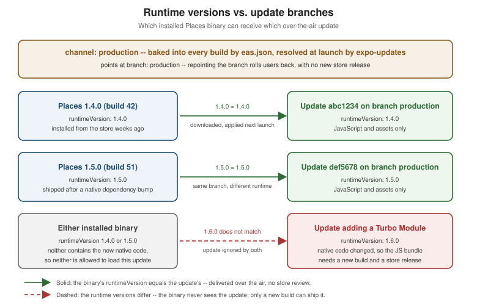

CI/CD and Over-the-Air Updates
|
This content was generated with the assistance of AI and should be verified against the official documentation before being relied on in production. |
Testing established what Places verifies — ESLint and tsc --noEmit,
Jest unit tests, React Native Testing Library component tests, and the Detox and Maestro flows that drive the
compiled app — and Building and Publishing established how
a signed binary is produced and submitted, including the app.config.ts and eas.json this page reuses rather
than redefines. This page is what connects the two: the automation that runs those checks on every pull request,
builds and submits a release without a human driving Xcode, and — for the changes that touch nothing native — ships a fix to users who already have the app installed, in minutes, without going anywhere near a store review
queue. If branches, tags and pull requests that trigger these workflows are new territory, see
Git & GitHub first.
That last capability is what makes mobile delivery different from web delivery, and it is also the one with the sharpest edges. An over-the-air update can replace Places's JavaScript and its assets; it can never replace its native code, and both stores enforce that. Most of the second half of this page is about the machinery — runtime versions, channels, and branches — that keeps a JavaScript bundle from ever reaching a binary that cannot run it.
The Shape of the Pipeline
A single change to Places travels one of two routes after it merges, and which route it takes is decided by one question: did anything native change? If the answer is no — a copy fix, a corrected date format, a tweak to `PlaceCard’s layout — the change can reach users as an over-the-air update. If the answer is yes — a new Turbo Native Module, an upgraded native dependency, a changed permission string — it needs a new binary, a store submission, and a review.
Everything above the merge is continuous integration and is the subject of the next section; everything below it is continuous delivery, and splits into the store route and the over-the-air route covered later on.
Continuous Integration on GitHub Actions
CI for a React Native app is two very different workloads wearing one name. The first is cheap, fast, and platform-agnostic: install dependencies, lint, type-check, run Jest. It needs nothing but Node, finishes in a couple of minutes, and belongs on a Linux runner. The second is expensive and platform-bound: compile the app, boot a simulator or emulator, and drive the real binary. It needs macOS for iOS, hardware virtualization for Android, and takes an order of magnitude longer.
Splitting them into separate jobs is what keeps the pipeline usable. A typo that fails tsc --noEmit should
report in ninety seconds, not after a twenty-minute simulator boot, which is why the E2E jobs below declare
needs: static-and-unit and never start at all when the cheap tier has already failed.
The Places CI Workflow
# .github/workflows/ci.yml
name: CI
on:
pull_request:
branches: [main]
push:
branches: [main]
# A new push to the same PR cancels the run still in flight: no point paying for
# a macOS runner to finish testing a commit nobody will merge.
concurrency:
group: ci-${{ github.workflow }}-${{ github.ref }}
cancel-in-progress: true
env:
NODE_VERSION: '22.13'
jobs:
static-and-unit:
name: Lint, type-check and Jest
runs-on: ubuntu-latest
steps:
- uses: actions/checkout@v4
- uses: actions/setup-node@v4
with:
node-version: ${{ env.NODE_VERSION }}
cache: npm # caches ~/.npm, keyed on package-lock.json
- run: npm ci # never `npm install` in CI: ci installs the lockfile exactly
- name: ESLint
run: npm run lint # eslint .
- name: TypeScript
run: npm run typecheck # tsc --noEmit
- name: Jest
run: npm test -- --ci --coverage --maxWorkers=2
- name: Upload coverage
if: always()
uses: actions/upload-artifact@v4
with:
name: coverage
path: coverage/
e2e-ios:
name: Detox on the iOS Simulator
runs-on: macos-15
needs: static-and-unit
timeout-minutes: 45
steps:
- uses: actions/checkout@v4
- uses: actions/setup-node@v4
with:
node-version: ${{ env.NODE_VERSION }}
cache: npm
- run: npm ci
- name: Cache CocoaPods
uses: actions/cache@v4
with:
path: |
ios/Pods
~/Library/Caches/CocoaPods
key: pods-${{ runner.os }}-${{ hashFiles('ios/Podfile.lock') }}
restore-keys: pods-${{ runner.os }}-
- name: Generate the iOS project and install pods
run: |
npx expo prebuild --platform ios --no-install
cd ios && pod install
- name: Install Detox's simulator helper
run: |
brew tap wix/brew
brew install applesimutils
- name: Build the release app for Detox
run: npx detox build --configuration ios.sim.release
- name: Run the Detox flows
run: npx detox test --configuration ios.sim.release --cleanup --headless
- name: Upload Detox artifacts on failure
if: failure()
uses: actions/upload-artifact@v4
with:
name: detox-artifacts
path: artifacts/
e2e-android:
name: Maestro on an Android emulator
runs-on: ubuntu-latest
needs: static-and-unit
timeout-minutes: 45
steps:
- uses: actions/checkout@v4
- uses: actions/setup-node@v4
with:
node-version: ${{ env.NODE_VERSION }}
cache: npm
- uses: actions/setup-java@v4
with:
distribution: temurin
java-version: '17'
# Restores ~/.gradle/caches and ~/.gradle/wrapper, and writes the cache back
# only from the default branch so PR runs cannot poison it.
- uses: gradle/actions/setup-gradle@v4
- run: npm ci
- name: Generate the Android project and assemble a release APK
run: |
npx expo prebuild --platform android --no-install
cd android && ./gradlew assembleRelease --no-daemon
- name: Install the Maestro CLI
run: curl -fsSL https://get.maestro.mobile.dev | bash
- name: Enable KVM for hardware acceleration
run: |
echo 'KERNEL=="kvm", GROUP="kvm", MODE="0666", OPTIONS+="static_node=kvm"' \
| sudo tee /etc/udev/rules.d/99-kvm4all.rules
sudo udevadm control --reload-rules
sudo udevadm trigger --name-match=kvm
- name: Boot an emulator and run the Maestro flows
uses: reactivecircus/android-emulator-runner@v2
with:
api-level: 35
arch: x86_64
target: google_apis
script: |
adb install android/app/build/outputs/apk/release/app-release.apk
$HOME/.maestro/bin/maestro test .maestro/Three things in that file are worth pulling out.
npm ci, never npm install. npm ci deletes node_modules and installs exactly what package-lock.json
pins, failing outright if the lockfile and package.json disagree. npm install is allowed to resolve a newer
matching version and rewrite the lockfile, which is precisely the non-reproducibility CI exists to eliminate.
The iOS job is on macOS and the Android job is not. Compiling and signing an iOS app requires Xcode, which
requires a macOS runner — there is no way around it, and GitHub bills macOS runner minutes at a multiple of
Linux minutes, which is the single largest cost lever in a React Native pipeline. Android is the opposite case:
an emulator needs hardware virtualization, and on GitHub-hosted runners KVM is available on Linux, so the
Android emulator job runs faster and cheaper on ubuntu-latest than it would on macOS. Splitting the two
platforms across two runner types is not an accident of this example, it is the cost-optimal arrangement.
Detox and Maestro are both here on purpose. Testing wrote the same "add a place and see it in the list" journey twice, once as a Detox flow and once as a Maestro flow; this workflow runs the Detox version against iOS and the Maestro version against Android. A real project usually picks one and runs it on both platforms — showing both here is what makes the two runner shapes visible in a single file.
Caching npm, Gradle, and CocoaPods
A React Native CI run downloads three separate dependency universes, and each has its own cache with its own correct key:
| Cache | What it holds | How it is keyed |
|---|---|---|
npm |
The npm download cache ( |
|
Gradle |
|
|
CocoaPods |
|
|
The key discipline is the same in all three cases: key the cache on the lockfile, so any dependency change produces a new key and any unchanged tree hits the cache. Keying on a branch name or a date instead produces the two failure modes that make caches worse than useless — a stale cache serving the wrong dependency version, or a cache that never hits.
A cache does not make the build incremental, only the download. A React Native CI run that still recompiles the whole Android project on every push is doing the expected thing; the cache is there so it does not also re-download the Android toolchain every time.
Continuous Delivery
Continuous delivery is where the pipeline stops reporting and starts shipping. Two toolchains cover this for React Native, and the choice between them is mostly a choice about who owns the build machines.
The Apple side of the pipeline — Xcode Cloud, xcodebuild, TestFlight and App Review — is documented for native
apps on CI/CD with Xcode Cloud and the Command Line and
App Store Connect, TestFlight and App Review.
EAS Workflows
EAS Workflows are Expo’s own CI/CD layer, configured as YAML files under .eas/workflows/ and run on
Expo’s infrastructure with eas workflow:run. The appeal is that the build, submit, and update steps are
first-class job types rather than shell commands: a job declares type: build and a profile from the same
eas.json Building and Publishing already established, and
EAS handles the macOS machine, the signing credentials, and the artifact storage.
# .eas/workflows/publish-update.yml
name: Publish an OTA update to production
on:
push:
branches: ['main']
jobs:
publish_update:
name: Publish to the production branch
type: update
params:
branch: productionThe same file shape covers the store route: a type: build job with params.profile set to production,
followed by a type: submit job that takes the build’s artifact and hands it to App Store Connect or the Play
Console. Because EAS already holds the signing credentials for the project, no certificate or key material
appears anywhere in the workflow file.
The trade-off is the usual managed-service one. EAS Workflows removes an entire class of infrastructure work — nobody maintains a macOS runner, nobody rotates a signing certificate into a CI secret — at the cost of running the most sensitive part of the pipeline on someone else’s machines, and of being tied to Expo’s own build system.
Fastlane: match, gym, supply, and pilot
Fastlane is the opposite answer: a Ruby toolchain (see the Ruby Reference) of actions and lanes that runs wherever you run it — a GitHub Actions runner, a self-hosted Mac mini, a developer’s laptop. It predates EAS by years, is not React-Native-specific, and is what a team with existing native iOS/Android pipelines almost always already has. Four of its actions carry most of the weight:
| Action | What it does |
|---|---|
|
Solves iOS code signing across a team by storing certificates and provisioning profiles, encrypted, in a shared repository or bucket, and syncing them onto whichever machine is building. It replaces the failure mode where signing works on one developer’s Mac and nowhere else. On CI it runs in read-only mode, so a runner can consume the stored profiles but never regenerate them. |
|
Builds and signs the iOS app, wrapping |
|
Uploads a built |
|
Uploads an Android |
A lane is just a named sequence of those actions in fastlane/Fastfile:
# fastlane/Fastfile
default_platform(:ios)
platform :ios do
desc "Build Places and upload it to TestFlight"
lane :beta do
# No credential is ever written in this file. match's passphrase and the App Store
# Connect API key arrive as environment variables, which CI fills from encrypted secrets.
app_store_connect_api_key(
key_id: ENV.fetch("ASC_KEY_ID"),
issuer_id: ENV.fetch("ASC_ISSUER_ID"),
key_content: ENV.fetch("ASC_KEY_CONTENT"),
is_key_content_base64: true
)
match(
type: "appstore",
app_identifier: "com.irurueta.places",
readonly: is_ci # CI consumes profiles, it never regenerates them
)
increment_build_number(xcodeproj: "ios/Places.xcodeproj")
gym(
workspace: "ios/Places.xcworkspace",
scheme: "Places",
configuration: "Release",
export_method: "app-store"
)
pilot(
skip_waiting_for_build_processing: true,
changelog: "See the release notes for this build."
)
end
end
platform :android do
desc "Build an AAB and promote it to the Play internal testing track"
lane :internal do
gradle(project_dir: "android", task: "bundle", build_type: "Release")
supply(
track: "internal",
aab: "android/app/build/outputs/bundle/release/app-release.aab",
json_key_data: ENV.fetch("PLAY_SERVICE_ACCOUNT_JSON")
)
end
endEvery credential in that lane — match’s passphrase, the App Store Connect API key, the Play service account
JSON — is read from an environment variable with `ENV.fetch, which fails loudly when the variable is missing
rather than silently building an unsigned artifact. In a GitHub Actions job those variables are populated from
encrypted repository or environment secrets, interpolated into the job’s env block through the workflow
expression syntax and GitHub’s secrets context — never checked in, never passed on a command line where a
process listing would show them, and automatically masked if something tries to print one. No key, certificate,
passphrase, or service-account file belongs in the repository, in a lane, or in a log line;
Security covers the same rule from the app’s side.
# .github/workflows/release.yml (excerpt) -- the only place secrets are named
- name: Build and upload to TestFlight
run: bundle exec fastlane ios beta
env:
MATCH_PASSWORD: ${{ secrets.MATCH_PASSWORD }}
ASC_KEY_ID: ${{ secrets.ASC_KEY_ID }}
ASC_ISSUER_ID: ${{ secrets.ASC_ISSUER_ID }}
ASC_KEY_CONTENT: ${{ secrets.ASC_KEY_CONTENT }}Release Branches and Version Bumps
Two numbers change on every release and they change for different reasons. The version (1.5.0 in
app.config.ts) is the human-facing marketing string shown in the store listing. The build number
(iOS buildNumber / Android versionCode) is a monotonically increasing integer that both stores require to be
strictly higher than any build already uploaded — reusing one is rejected at upload time, before review.
The workable arrangement is to make the first number a deliberate human act on a release branch and the second number automatic:
-
Cutting
release/1.5.0frommainis the momentversionis bumped, in one commit, reviewed like any other. The branch then accepts only fixes, whilemainkeeps taking feature work for the next release. -
The build number is never bumped by hand.
eas.json’s `productionprofile setsautoIncrement, and withcli.appVersionSourceset toremoteEAS tracks the last build number it issued server-side — so two parallel builds cannot land on the same integer, which is exactly the race a locally tracked counter loses. Fastlane’s equivalent is theincrement_build_numberaction in the lane above. -
A tag on the release branch is what the over-the-air side keys off later: an update published for a released binary has to know which JavaScript that binary was built with.
Over-the-Air Updates
What the Stores Actually Allow
Both stores permit an installed app to download and execute new interpreted code — which is what a React Native JavaScript bundle is — subject to a condition that both express in similar terms: the downloaded code must not change the app’s primary purpose, must not introduce features the reviewed version did not have, and must not circumvent review, signing, or the store’s own payment rules. Apple’s App Review Guidelines and the Apple Developer Program License Agreement carry this on the iOS side; Google Play’s Device and Network Abuse policy carries it on Android. Both are worth reading in the original before relying on them, because both have been revised more than once.
What is not negotiable is the technical boundary, and it is the one that matters day to day: an over-the-air
update can ship JavaScript and assets, and nothing else. It cannot add a native module, change a native
dependency version, alter a permission string in Info.plist or AndroidManifest.xml, change an app icon, or
touch anything compiled into the binary. Those all live on the other side of a store submission, described in
Building and Publishing, and no amount of update tooling
changes that.
A useful way to hold the line: if the change would survive being deleted from node_modules and reinstalled
without re-running pod install or a Gradle sync, it is probably shippable over the air. If it involves
a native module, it is not.
EAS Update: Channels, Branches, and Runtime Versions
EAS Update is Expo’s hosted implementation of that idea, and it rests on three concepts that are easy to conflate:
| Concept | What it is |
|---|---|
Runtime version |
A string describing the native side of a build — its native modules, native dependencies, and configuration.
An update is only ever delivered to a binary whose runtime version matches the update’s. This is the safety
interlock that makes the whole mechanism sound: a bundle that needs a native module the installed binary does
not contain is simply never offered to it. |
Branch |
An ordered sequence of published updates, the same way a git branch is an ordered sequence of commits. Each
|
Channel |
A stable name baked into a build (through `eas.json’s build profile) that points at a branch. The binary knows only its channel; which branch that channel resolves to is server-side state that can be changed at any time, on already-installed apps, without a new release. That indirection is what makes an instant rollback possible. |

The diagram is the whole model in one picture: the channel and branch decide which stream of updates a binary listens to, and the runtime version decides which updates in that stream it is allowed to load. Two binaries on the same channel can legitimately be running different JavaScript, indefinitely, because they were compiled from different native trees.
The channel is set per build profile, alongside the environment configuration the same profiles already carry:
{
"cli": {
"version": ">= 16.0.0",
"appVersionSource": "remote"
},
"build": {
"development": {
"developmentClient": true,
"distribution": "internal",
"channel": "development",
"env": { "EXPO_PUBLIC_API_URL": "https://api.dev.places.example" }
},
"preview": {
"distribution": "internal",
"channel": "preview",
"env": { "EXPO_PUBLIC_API_URL": "https://api.staging.places.example" }
},
"production": {
"autoIncrement": true,
"channel": "production",
"env": { "EXPO_PUBLIC_API_URL": "https://api.places.example" }
}
},
"submit": {
"production": {}
}
}Each of the three profiles gets its own channel, so an internal preview build and a store production build
can never be served each other’s JavaScript even though they share a codebase. The matching side of the
configuration lives in app.config.ts:
// app.config.ts (excerpt)
export default {
expo: {
name: 'Places',
version: '1.5.0',
// 'fingerprint' hashes the project's native inputs, so adding a Turbo Module
// bumps the runtime version by itself -- no manual bookkeeping to forget.
runtimeVersion: { policy: 'fingerprint' },
updates: {
url: 'https://u.expo.dev/00000000-0000-0000-0000-000000000000',
checkAutomatically: 'ON_LOAD',
fallbackToCacheTimeout: 0,
},
},
};fallbackToCacheTimeout: 0 is the setting with the largest user-visible consequence: it tells expo-updates
never to hold the splash screen waiting for a download, but to launch immediately with the bundle already on
disk and fetch any new one in the background for the next launch. The alternative — a non-zero timeout — trades startup latency for update immediacy, on every cold start, for every user, whether or not an update
exists. A background fetch with an explicit in-app prompt, as in the Hook below, gets the immediacy back without
taxing startup.
Publishing is a single command, run from CI after a merge:
eas update --branch production --message "Fix the visited-at date format on PlaceDetailsScreen"Rollouts and Rollbacks
The reason to publish this way rather than pushing to everyone at once is that an over-the-air update is released in minutes, which means a bad one also reaches everyone in minutes — the store review queue, whatever else it is, is an accidental blast-radius limiter, and going around it means supplying your own.
-
Rollouts. An update can be published to a percentage of the channel’s users rather than all of them, then widened as the crash-free rate holds. The EAS CLI’s rollout commands adjust that share on a published update; the usual shape is a small initial slice, a pause long enough for real sessions to accumulate, then a widening.
-
Rollbacks. Two mechanisms exist and they differ in what they do to clients. Republishing an earlier update (
eas update:republish) appends it to the branch as the newest one, so clients move forward onto known-good JavaScript. Repointing the channel at a different branch (eas channel:edit) redirects the whole audience without publishing anything at all. Either way, recovery is a command, not a submission. -
The floor neither mechanism can go below. A rollback returns users to a previously published JavaScript bundle, not to the binary’s own embedded bundle — for which
eas update:rollbackexists as the explicit "undo all updates on this branch" operation. And if the bad change was native, there is nothing to roll back over the air at all; that is a new build and a new submission.
expo-updates in a Bare App
In a bare React Native app — no Expo prebuild, native projects committed to the repository — expo-updates is
installed as an ordinary native dependency and wired into AppDelegate and MainApplication so the native
layer loads its bundle through the updates module instead of from the app package directly. Everything above
still applies: the same channels, branches, and runtime versions, published with the same eas update command.
What a bare app more often wants is explicit control over when a downloaded update is applied, rather than silently at the next cold start. Places wraps that in a Hook:
// src/lib/useOtaUpdate.ts
import { useCallback, useEffect, useState } from 'react';
import * as Updates from 'expo-updates';
export type OtaUpdateState = 'idle' | 'checking' | 'downloading' | 'ready' | 'none';
export interface OtaUpdate {
state: OtaUpdateState;
applyUpdate: () => Promise<void>;
}
/**
* Checks for a new update once, on launch, and downloads it in the background.
* Never blocks startup and never reloads the app on its own: when `state` becomes
* 'ready', the UI can offer the reload instead of yanking the screen away.
*/
export function useOtaUpdate(): OtaUpdate {
const [state, setState] = useState<OtaUpdateState>('idle');
useEffect(() => {
let cancelled = false;
async function checkOnLaunch(): Promise<void> {
// A development build runs from Metro, never from a downloaded update.
if (__DEV__ || !Updates.isEnabled) {
return;
}
try {
setState('checking');
const result = await Updates.checkForUpdateAsync();
if (cancelled) return;
if (!result.isAvailable) {
setState('none');
return;
}
setState('downloading');
await Updates.fetchUpdateAsync();
if (!cancelled) setState('ready');
} catch {
// A failed check must never break launch: Places keeps running the bundle
// it already has, and tries again next time the app starts.
if (!cancelled) setState('none');
}
}
void checkOnLaunch();
return () => {
cancelled = true;
};
}, []);
const applyUpdate = useCallback(async (): Promise<void> => {
await Updates.reloadAsync();
}, []);
return { state, applyUpdate };
}Three decisions in that Hook are worth naming. The check is guarded by DEV and Updates.isEnabled, so it
is inert in development and in any build where updates are switched off. Every failure path is swallowed into
'none' rather than surfaced as an error, because an app that cannot launch when the update server is
unreachable is strictly worse than an app running last week’s JavaScript. And reloadAsync is never called
automatically — a reload discards all in-memory state, so doing it while a user is halfway through
AddPlaceScreen would throw away their work; the 'ready' state exists so Places can offer the reload at a
moment the user chooses, the same way
Modals, Alerts, and Progress handles any other
interruption.
The Retired Path: CodePush and App Center
For most of React Native’s history, over-the-air updates meant Microsoft CodePush, delivered through Visual Studio App Center. Plenty of still-running production apps were built on it, so the migration is worth stating plainly rather than skipping.
App Center was retired, and with it the hosted CodePush service; the
react-native-code-push client library is likewise retired
and no longer the recommended path for a new project. Microsoft open-sourced the CodePush server so that teams
depending on it could keep going, which leaves two routes off the hosted service:
-
Self-host the standalone CodePush server. The server component runs on your own infrastructure, and the existing
react-native-code-pushclient keeps working against it after its endpoint is repointed. This is the minimum-change option — no client rewrite, no re-architecture — at the cost of owning and operating the service, its storage, and its availability, for a codebase whose upstream is no longer actively developed. -
Migrate to EAS Update. Replacing
react-native-code-pushwithexpo-updatesis more work: CodePush’s deployment keys map onto channels and branches, and CodePush’s implicit "the binary and the bundle are compatible" assumption has to be made explicit as a runtime version. The payoff is a supported, actively maintained service and the rollout/rollback tooling above.
The structural lesson generalizes past this one product: the ability to ship without a store release is valuable enough to be worth depending on, and therefore valuable enough to be worth being able to replace. A project that can point its update client at a different endpoint — self-hosted or another vendor — without rewriting its release process has bought itself the option that the App Center retirement demanded of everyone who had not.
Release Health and Stability Monitoring
Shipping faster only helps if you find out quickly when a release is worse than the one before it, and on mobile the feedback loop is genuinely blind without instrumentation: a user whose app crashes on launch does not file a bug, they uninstall.
Debugging and DevTools set up Sentry for Places, including the error boundary, the global handler, and the source-map upload that makes a stack trace readable. The release pipeline adds one thing to that setup: every build and every over-the-air update must be identified to the crash reporter — release name, build number, and update id — because a crash report that cannot be attributed to a specific release cannot answer the only question that matters during a rollout.
The metric to watch is crash-free sessions (or crash-free users), measured per release and compared against the previous one. Sentry and Firebase Crashlytics both report it; either is fine, and a project already using Firebase usually has Crashlytics for free. What makes it actionable is the comparison, not the absolute number: a rollout widened from a small slice to everyone should hold the previous release’s crash-free rate, and a measurable drop is the signal to stop widening and roll back — which, over the air, costs one command rather than a resubmission.
JavaScript errors caught by an error boundary and native crashes are different populations and a release can regress in one without moving the other, so both belong on the same dashboard. ANRs on Android and watchdog terminations on iOS are a third population again, usually pointing at main-thread work rather than at a thrown error; Performance covers the profiling side of those.
Feature Flags and A/B Testing
A feature flag decouples deploying code from releasing behavior: the code ships dark, switched off, and a server-side toggle turns it on — for everyone, for a cohort, or for one internal tester — without shipping anything new. On mobile this is worth more than it is on the web, because "ship something new" is the expensive operation being avoided.
Three mechanisms cover the range, and they compose:
-
A remote-config or feature-flag service (Firebase Remote Config, LaunchDarkly, Statsig, PostHog, or a few rows in Places's own backend) is the fine-grained option: per-user targeting, instant kill switches, and flag state readable in analytics. The cost is a network dependency at startup, so every flag needs a sensible local default for the offline and first-launch cases that Storage and Offline already handles for data.
-
EAS Update channels and branches are the coarse option: publish a variant to its own branch and point a channel at it. This is how an internal build gets behavior a store build does not, with no flag plumbing at all — but it operates on whole builds, not on individual users.
-
A staged rollout is an A/B test with one variable and a safety objective: the percentage mechanism above already splits the audience, and comparing crash-free sessions between the group on the new update and the group still on the old one is the comparison a release is judged by.
Genuine A/B testing — two variants, an experiment definition, a metric, and enough traffic for the result to mean something — belongs to the flag service rather than to the release tooling, which only decides who has the code at all. The distinction matters when reading a result: a flag-service experiment compares two cohorts running the same binary and the same JavaScript, which is a clean comparison; an experiment run by pointing two channels at two branches compares cohorts that may differ in other ways too.
One rule keeps the whole approach from rotting: a flag is temporary by construction. Every flag that has been fully on for a release or two is a branch in the code that nobody tests the other side of any more, and deleting it — flag, dead branch, and the config entry — is part of finishing the feature, not a cleanup task for later.
Practitioner Tips for 2026
The advice below long predates any of the tooling on this page, which is a good sign: the tools changed completely and the conclusions did not.
-
Have a release process, and never work around it. The value of a pipeline is not that it automates work, it is that it makes every release identical. The one build produced by hand, at speed, at 6pm, because the pipeline was slow, is the build with the wrong environment variable in it. A pipeline that is routinely bypassed is not a pipeline, and if it is being bypassed the honest fix is to make it fast enough not to be.
-
Stay able to ship without a store release. Whether through EAS Update, a self-hosted server, or feature flags, the ability to fix a JavaScript-level problem in minutes rather than days changes what a bad release costs. Set it up before you need it, and exercise it occasionally, because an untested recovery path is a hypothesis rather than a capability.
-
Monitor stability, per release, and compare. Crash-free sessions against the previous release, watched during a rollout, is what turns "ship fast" from recklessness into something with a stopping condition. Without it, faster delivery only means faster distribution of whatever broke.
-
A/B test the decisions worth testing. Flags and staged rollouts make it cheap to answer questions with data instead of opinion — but only for questions with a metric attached. Everything else they make cheap to ship dark and turn on deliberately, which is most of their value anyway.
-
One language across the stack. Places is TypeScript end to end: app code, Jest and RNTL tests, Detox flows,
app.config.ts, and the scripts the pipeline runs. TypeScript covers why that matters for correctness; for delivery it matters because one language means one toolchain to install in CI, one set of types shared between the app and its tests, and a much shorter list of things a runner has to have installed before anything can run. -
Keep the code simple. The direct payoff is at 2am, when the question is whether the last update can be rolled back safely. Simple code is code whose blast radius can be reasoned about quickly — and a delivery pipeline that can ship in minutes is only an asset if the changes flowing through it can be understood at that speed.
GitHub Actions reference
For the underlying workflow language, caching, secrets and environments, see the GitHub Actions reference.